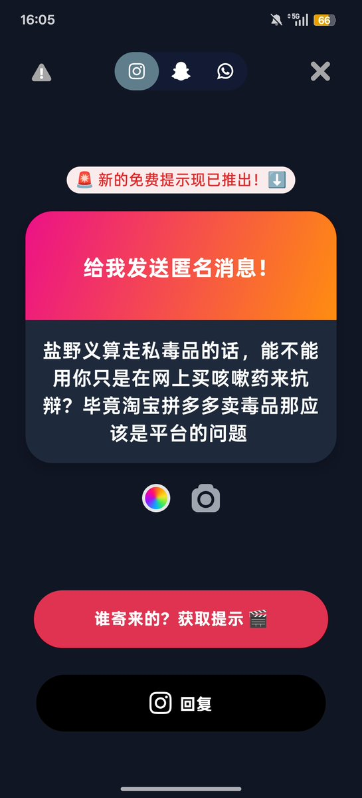
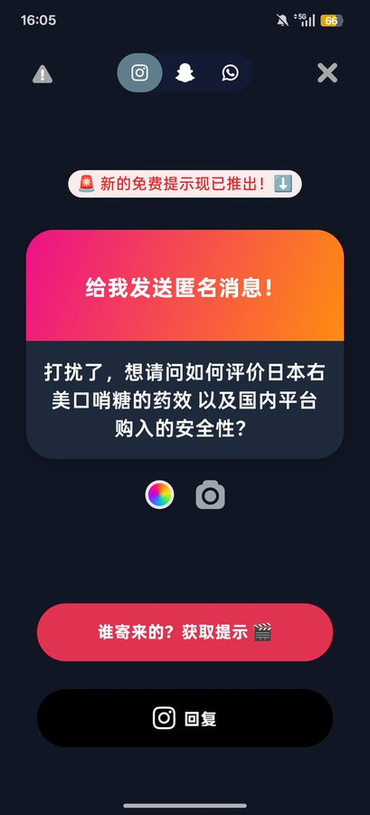

天
@penpunx
@zyj156383 可以退 我的卡一个月然后退成功了 找pdd平台介入就行


八本华
@zyj156383
1.当然 这个太容易推定主观不明知了 但是大剂量购买滥用无处分还是有机会推定吸毒
2.听说不好吃 安全的 复方dxm制剂不算吸毒
3.退了就当捡到钱了请自己吃好吃的 这个卡一年都不好说
4.合理医疗自用 收货之后别吃 把时间线拉长 后面再o就安全了 https://t.co/Cqu8zdu20J